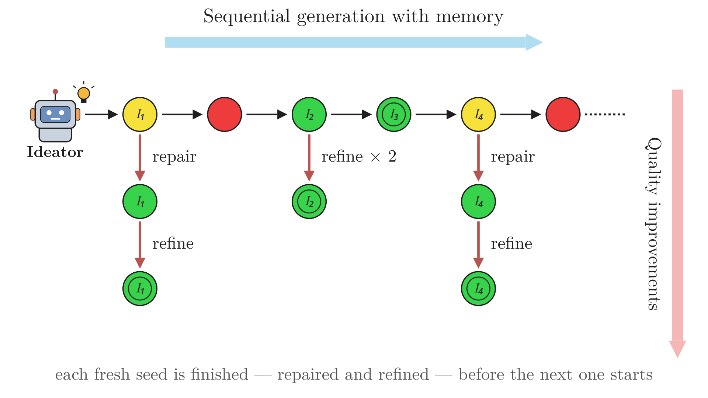
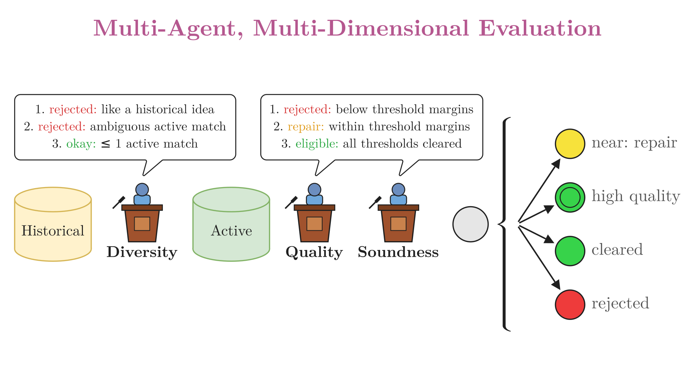
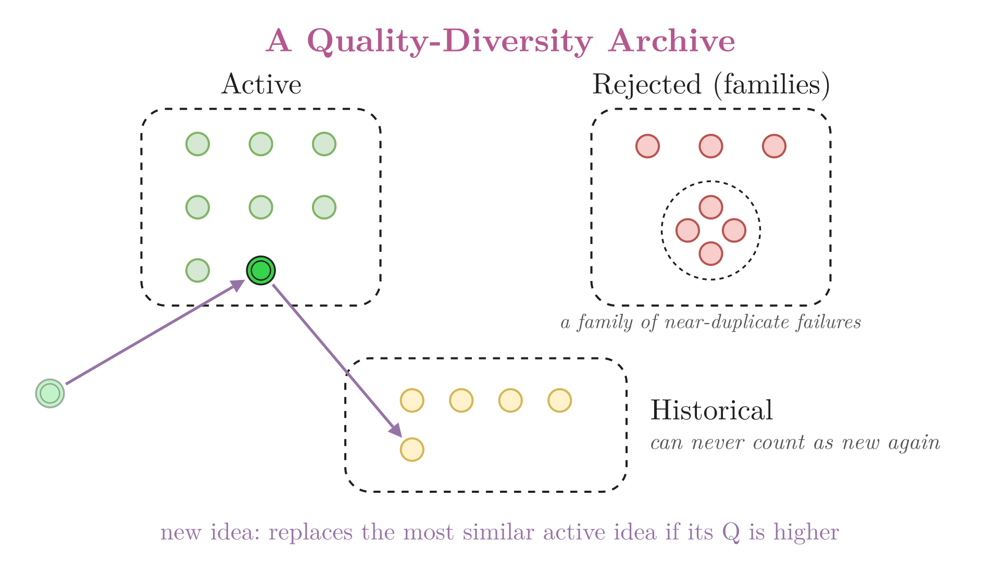
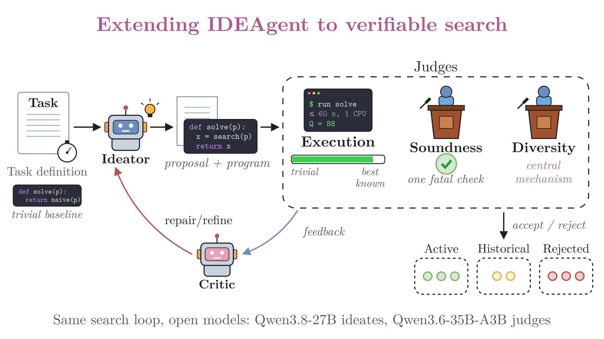

| Method | Yield (NB≥7) | Yield (NB≥6) | Topics with ≥1 qualifying idea (NB≥7) | Topics with ≥1 qualifying idea (NB≥6) |
|---|---|---|---|---|
| Single-shot | 0.000 | 0.000 | 0 / 32 | 0 / 32 |
| Sequential-Memory | 0.188 | 0.531 | 6 / 32 | 14 / 32 |
| Stateless | 0.250 | 0.812 | 7 / 32 | 24 / 32 |
| NOVA | 0.281 | 1.156 | 8 / 32 | 25 / 32 |
| IDEAgent | 1.094 | 2.312 | 27 / 32 | 31 / 32 |
Jury average of two external judges; Yield at D≥7, S≥7, C≥6 with the stated non-obviousness (NB) threshold.
| Method | Qmax | Qavg | Y0 | Y50 | Y75 | Y100 |
|---|---|---|---|---|---|---|
| Single-shot | 53.2 | 16.9 | 2.78 | 1.00 | 0.44 | 0.33 |
| Sequential-Memory | 92.6 | 46.1 | 4.00 | 3.11 | 1.67 | 0.56 |
| Stateless | 93.5 | 47.8 | 4.11 | 3.11 | 1.78 | 0.56 |
| NOVA | 75.4 | 34.4 | 4.56 | 2.67 | 0.78 | 0.22 |
| IDEAgent | 106.2 | 54.5 | 5.67 | 4.44 | 3.11 | 0.67 |
| Method | Qmax | Qavg | Y0 | Y25 | Y50 | Y75 |
|---|---|---|---|---|---|---|
| Single-shot | 14.8 | 6.2 | 1.14 | 0.43 | 0.43 | 0.00 |
| Sequential-Memory | 38.3 | 18.6 | 2.29 | 1.71 | 1.14 | 0.29 |
| Stateless | 45.1 | 22.7 | 2.29 | 1.71 | 0.57 | 0.00 |
| NOVA | 37.3 | 18.0 | 2.29 | 2.00 | 1.00 | 0.00 |
| IDEAgent | 56.4 | 22.6 | 3.43 | 2.57 | 1.57 | 0.57 |
Yk: size of the largest set of mutually distinct ideas among those that clear the trivial solution with progress Qi ≥ k (Y0 counts every idea that clears it). Qmax and Qavg: the highest and mean Qi among a problem's ten final ideas. All averaged over a benchmark's problems; a pair is distinct when a majority of three judges (Gemma 4 31B, MiniMax-M2.7, GLM-4.5-Air) say so. Bold marks the best value in each column.
@misc{gumma2026ideagentagenticqualitydiversitysearch,
title={IDEAgent: Agentic Quality-Diversity Search for Research Idea Generation},
author={Varun Gumma and Navonil Majumder and Soumitra Sinhahajari and Soujanya Poria},
year={2026},
eprint={2607.22375},
archivePrefix={arXiv},
primaryClass={cs.AI},
url={https://arxiv.org/abs/2607.22375},
}